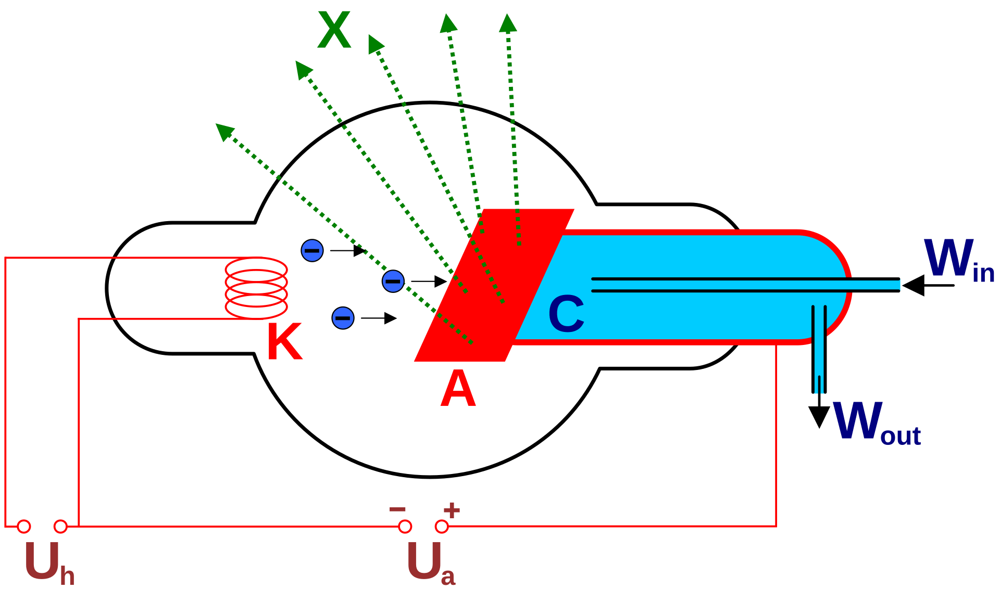
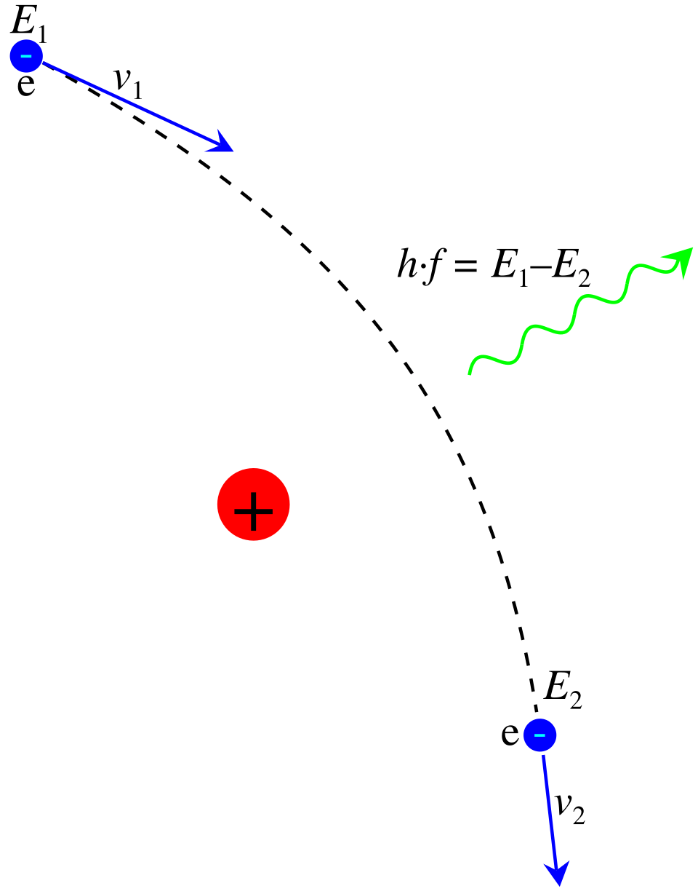
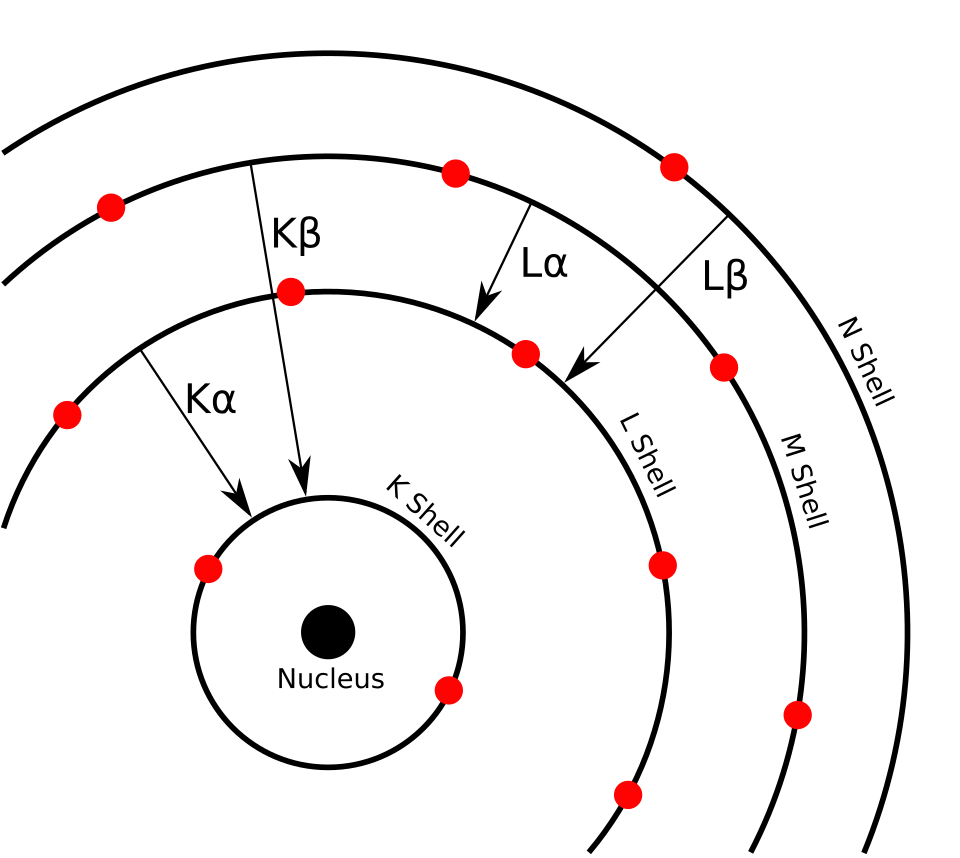
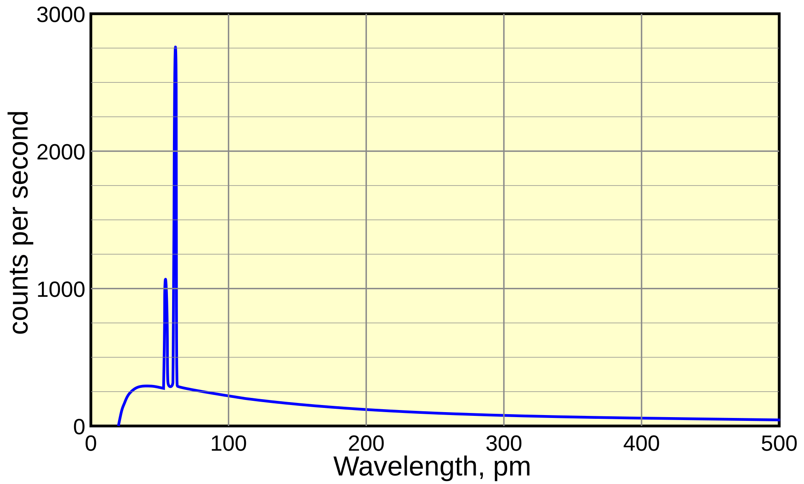

When we look at an X-ray image, we can see structures inside the body. But have you ever wondered how the radiation that creates that image is actually produced inside the X-ray tube?
As a Medical Imaging student, I think the easiest way to understand X-ray production is to first understand the connection between electrons, electricity, and the metal target.
In this article, we will go step by step through what happens inside an X-ray tube, where the electrons come from, how X-rays are produced, and what determines their energy.
1. First, Understand the Basic Idea
An X-ray tube produces X-rays by using high-speed electrons.
The basic process is:
1. Heat the filament
Electrons are released from the cathode.
2. Accelerate the electrons
High voltage accelerates the electrons from the cathode toward the anode.
3. Produce X-rays
The electrons hit the target and interact with its atoms, producing X-ray photons.
This happens inside the X-ray tube, which contains a cathode, anode, and vacuum. The high voltage comes from the X-ray generator.
Now let's understand each part properly.
2. What Is an X-ray Tube?
An X-ray tube is the part of an X-ray machine where X-rays are generated.
It contains two main electrodes:

Cathode (−)
The electron source
The cathode contains a heated filament that releases electrons. It also has a focusing cup that helps direct the electrons toward the target.
Anode (+)
The target
The anode contains a target material, commonly tungsten in diagnostic X-ray tubes. Fast-moving electrons strike this target, producing X-rays and a large amount of heat.
The cathode and anode are positioned inside a vacuum. This allows electrons to travel between them without colliding with air molecules.
Why is a vacuum needed?
Imagine trying to throw a ball through a crowded room. It may collide with people and change its path.
Inside an X-ray tube, we want electrons to travel from the cathode to the anode with minimal interference. The vacuum makes this possible.
3. Step One: How Are Electrons Released?
Thermionic Emission
The first step is to produce free electrons.
The cathode contains a small wire called the filament, usually made from tungsten. When an electric current passes through this filament, it becomes very hot.
Due to this heating, electrons gain enough energy to escape from the metal surface. This process is called thermionic emission.
Simple example
Think about heating a metal wire. As its temperature increases, the electrons inside the metal gain thermal energy. Some electrons can escape from the surface.
The same basic idea is used in the X-ray tube, but the process is controlled to create an electron supply.
The released electrons form an electron cloud near the filament. When the tube is operated, these electrons are attracted toward the positive anode.
Remember:
- Heating the filament releases electrons.
- This release is called thermionic emission.
- The filament is located in the cathode.
4. Step Two: How Do Electrons Move Toward the Anode?
Once electrons are released, they need to move at high speed toward the target.
This is done by applying a potential difference, commonly called tube voltage or kVp.
The cathode is negative, and the anode is positive. Since electrons have a negative charge, they are attracted toward the positive anode.
The high voltage creates an electric field that accelerates the electrons across the tube.
Example: Understanding kVp
Suppose an X-ray machine is set to 80 kVp.
This means the tube voltage is approximately 80 kilovolts at its peak for a conventional peak-voltage setting. The electrons can gain kinetic energy as they accelerate through the potential difference.
A higher kVp generally allows electrons to reach the target with greater maximum kinetic energy, which affects the energy and penetrating ability of the X-ray beam.
Important distinction:
- kVp: Primarily controls the maximum energy of the electrons and the maximum X-ray photon energy.
- mA: Controls the tube current, which is related to the number of electrons flowing per unit time.
- Exposure time: Determines how long the tube operates.
Together, mA and time give mAs, which is related to the quantity of electrons used during the exposure.
5. Step Three: Electrons Hit the Target
After acceleration, the electrons reach the anode target.
In many diagnostic X-ray tubes, tungsten is used because it has a high atomic number, a high melting point, and properties that make it suitable for handling the heat produced during X-ray generation.
But here is the important point:
Most of the energy is converted into heat. Only a small fraction becomes useful X-ray radiation.
This is why X-ray tube design includes ways to manage heat, such as rotating anodes in many diagnostic systems.
Now we reach the main part of X-ray production: the two ways X-ray photons are generated.
6. The Two Types of X-ray Production
There are two main mechanisms:
1. Bremsstrahlung Radiation
X-rays produced when an electron is deflected and slowed by the
electric field of a target nucleus.
2. Characteristic Radiation
X-rays produced when an inner-shell electron is removed and another
electron fills the vacancy.
Both processes happen when high-energy electrons interact with atoms in the anode target.
Let's understand them separately.
7. Bremsstrahlung Radiation
What does Bremsstrahlung mean?
Bremsstrahlung is a German word meaning braking radiation.
It occurs when a high-speed electron passes close to the positively charged nucleus of a target atom. The nucleus attracts the electron, causing it to change direction and lose kinetic energy. Some of that lost energy is emitted as an X-ray photon.

Let's use a simple example
Imagine a car moving at high speed. When the driver suddenly applies the brakes, the car slows down and loses kinetic energy.
In an X-ray tube, an electron passes near the positively charged nucleus. The electric force changes its motion, and the electron loses some kinetic energy, which can be emitted as an X-ray photon.
The comparison is only to help visualize the loss of energy. The actual process involves electromagnetic interactions between the electron and the atomic nucleus.
What happens to the electron?
The electron does not necessarily stop completely.
It may:
- Change its direction slightly and lose a small amount of energy.
- Pass closer to the nucleus, experience stronger deflection, and lose more energy.
The energy carried by the emitted X-ray photon depends on how much energy the electron loses during the interaction.
Why is Bremsstrahlung important?
Bremsstrahlung produces a continuous range of X-ray photon energies. The photon energy can vary from low values up to a maximum determined by the energy of the incoming electron. It contributes the majority of X-rays produced in a typical diagnostic X-ray tube.
8. Characteristic Radiation
Bremsstrahlung happens because of an electron's interaction with the nucleus. Characteristic radiation is different because it involves the electron shells of the target atom.
Let's break it down.
Step 1: An incoming electron removes an inner-shell electron
A high-speed electron strikes an atom in the target and transfers enough energy to remove an electron from an inner shell, such as the K-shell.
This leaves an empty space, called a vacancy.
Step 2: Another electron moves into the vacancy
An electron from a higher energy shell, such as the L-shell, moves down to fill the vacancy in the K-shell.
Because the two shells have different energy levels, the electron loses energy during this transition. That energy is emitted as an X-ray photon.
Step 3: The energy of the photon is specific
The energy of the emitted photon depends on the difference between the binding energies of the two shells involved.
Since each element has its own atomic structure, these energy differences are characteristic of that element. This is why the radiation is called characteristic radiation.

Simple example
Think of a building with different floors.
- An electron on a higher floor moves down to a lower floor.
- The difference in energy between those floors is released.
- In an atom, that energy can be emitted as an X-ray photon.
The building example helps visualize the energy difference, but actual electron transitions occur between atomic energy levels.
9. Bremsstrahlung vs Characteristic Radiation
| Feature | Bremsstrahlung | Characteristic |
|---|---|---|
| Main cause | Electron deflection and deceleration near the nucleus | Electron transition between atomic shells |
| Energy | Continuous range | Specific energies |
| Depends on | Electron energy and interaction with the nucleus | Energy-level differences of target atoms |
| Contribution | Majority of diagnostic X-ray production | Smaller contribution under typical conditions |
An easy way to remember
Bremsstrahlung = braking of the incoming electron.
Characteristic = electron shell transition in the target atom.
One is mainly associated with the electron's motion near the nucleus; the other is associated with the atom's internal electron structure.
10. What Is an X-ray Spectrum?
Now that we understand both types of X-ray production, let's see what the final X-ray beam actually contains.
An X-ray spectrum is a graph showing the distribution of X-ray photon energies and their intensity.
In a typical diagnostic X-ray spectrum, we see:
- A continuous background produced by Bremsstrahlung.
- Specific peaks produced by characteristic radiation when the conditions allow those transitions.

Why don't all X-ray photons have the same energy?
Because electrons do not all lose the same amount of energy when they interact with the target.
For example:
- One electron may lose a small amount of energy and produce a low-energy X-ray photon.
- Another electron may lose a larger amount of energy and produce a higher-energy photon.
This creates a range of photon energies rather than a single energy.
11. How Does kVp Affect X-ray Production?
You have probably seen kVp mentioned in radiography practicals. Let's connect it to the actual X-ray tube.
kVp (kilovolt peak) refers to the peak tube voltage. It affects the maximum energy of electrons reaching the target and therefore the maximum possible X-ray photon energy. Increasing kVp generally increases the average energy and quantity of the produced X-ray beam.
Example
| Setting | General effect |
|---|---|
| 60 kVp | Lower maximum photon energy |
| 80 kVp | Higher maximum photon energy |
This is a simplified comparison. The actual beam also depends on filtration, generator waveform, and other technical factors.
When kVp increases, the X-ray beam generally becomes more penetrating. However, the appropriate setting depends on the examination, patient, equipment, and image-quality requirements.
Remember
kVp mainly affects X-ray energy and also influences output.
It is not the same as mAs, which is related to the number of electrons used during the exposure.
12. How Does mA Affect X-ray Production?
mA stands for milliampere and represents the tube current.
It is related to the number of electrons flowing through the X-ray tube per unit time. When tube current increases, more electrons are available to strike the target during the same exposure duration.
Example
Imagine two exposures with the same kVp and exposure time:
- Exposure A: 100 mA
- Exposure B: 200 mA
Exposure B uses twice the tube current, so the number of electrons passing through the tube during the same time is approximately doubled, assuming other conditions remain the same.
This generally increases the number of X-ray photons produced.
mAs = mA × exposure time (seconds)
For example: 200 mA × 0.5 s = 100 mAs
mAs is commonly used to describe the total tube current-time product and is related to X-ray quantity.
13. Why Does the X-ray Tube Produce So Much Heat?
This is one of the most important points to understand as a Medical Imaging student.
When electrons hit the anode target, most of their kinetic energy is converted into heat rather than X-rays. Only a small fraction becomes X-ray radiation.
Simple example
Imagine an energy conversion system:
Fast-moving electrons
Energy carried by incoming electrons
↓
Heat
Most of the energy
X-rays
Small fraction
Because so much heat is produced, the anode must be designed to tolerate and manage it. Rotating anodes are commonly used in diagnostic systems to distribute heat over a larger track.
Why does this matter in practice?
If heat is not managed properly, the target and other tube components can be damaged. X-ray equipment therefore has tube-rating limits and heat-management systems.
This is also why you should understand that producing X-rays is not simply about generating radiation; it is an energy-conversion process with significant thermal demands.
14. What Happens to the X-rays After They Are Produced?
Once X-ray photons are generated inside the tube, they travel through the tube housing and exit through the tube window as the useful beam.
The beam is then directed toward the patient.
In diagnostic imaging:
- X-rays enter the patient's body.
- Different tissues attenuate (reduce) the beam by different amounts.
- The remaining X-rays reach the detector.
- The detector converts the X-ray information into an image.
Example: A chest X-ray
Bone absorbs or attenuates X-rays differently from the air-filled lungs. As a result, different amounts of radiation reach the detector from different parts of the body.
The detector uses these differences to form the radiographic image.
15. Complete Process: From Electricity to an X-ray Image
Let's put everything together in one sequence.
-
Electric current heats the filament
The filament in the cathode becomes hot. -
Thermionic emission
Electrons are released from the heated filament. -
High voltage accelerates the electrons
The electrons travel from the negative cathode toward the positive anode. -
Electrons strike the target
The target is commonly made of tungsten in diagnostic X-ray tubes. -
X-ray photons are produced
Bremsstrahlung and characteristic radiation can occur. -
The beam exits the tube
The useful X-ray beam travels toward the patient. -
The detector receives the transmitted X-rays
Differences in attenuation help create the medical image.
This sequence summarizes the basic operation of a diagnostic X-ray tube and the subsequent imaging process.
16. Quick Revision: Important Terms
| Term | Simple meaning |
|---|---|
| Cathode | Negative electrode; contains the filament |
| Anode | Positive electrode; contains the target |
| Filament | Heated wire that releases electrons |
| Thermionic emission | Release of electrons due to heating |
| kVp | Peak tube voltage; affects maximum X-ray energy |
| mA | Tube current; related to electron flow |
| mAs | Tube current × exposure time |
| Bremsstrahlung | X-rays produced through electron deflection and deceleration |
| Characteristic radiation | X-rays produced by electron transitions between atomic shells |
| Target | Material struck by high-speed electrons |
| X-ray spectrum | Distribution of photon energies and intensity |
Key Takeaway
X-rays are produced inside an X-ray tube when electrons released from a heated cathode are accelerated by high voltage toward an anode target.
When these fast-moving electrons interact with the target atoms, they produce X-ray photons mainly through Bremsstrahlung and, under suitable conditions, characteristic radiation.
The key thing to remember is that most of the electron energy becomes heat, while only a small part is converted into X-rays.
Understanding this process helps you connect X-ray tube physics with kVp, mAs, image quality, and the practical operation of radiographic equipment.
Sources & Further Reading
-
NCBI Bookshelf —
X-ray Production
Overview of X-ray tube components, electron acceleration, Bremsstrahlung, and characteristic radiation.
Read the reference -
OpenStax —
X Rays: Atomic Origins and Applications
Explanation of Bremsstrahlung, characteristic X-rays, and X-ray spectra.
Read the reference -
ARPANSA —
X-rays
Basic explanation of how X-rays are generated in an X-ray tube.
Read the reference -
Radiographics —
The AAPM/RSNA Physics Tutorial for Residents: X-ray Production
Technical reference covering X-ray production mechanisms and factors affecting the X-ray spectrum.
Read the reference
Study Check
Can you explain why the filament is heated, why high voltage is needed, and how Bremsstrahlung differs from characteristic radiation?
If you can explain these three points in your own words, you have understood the foundation of X-ray production.
Educational content for medical imaging students. Technical details are simplified where appropriate while retaining the main physical concepts.